Setting up the ELK Stack
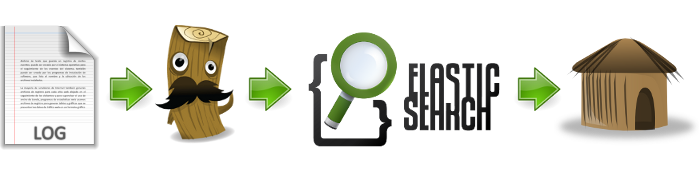
[90 minutes]
Overall architecture diagram
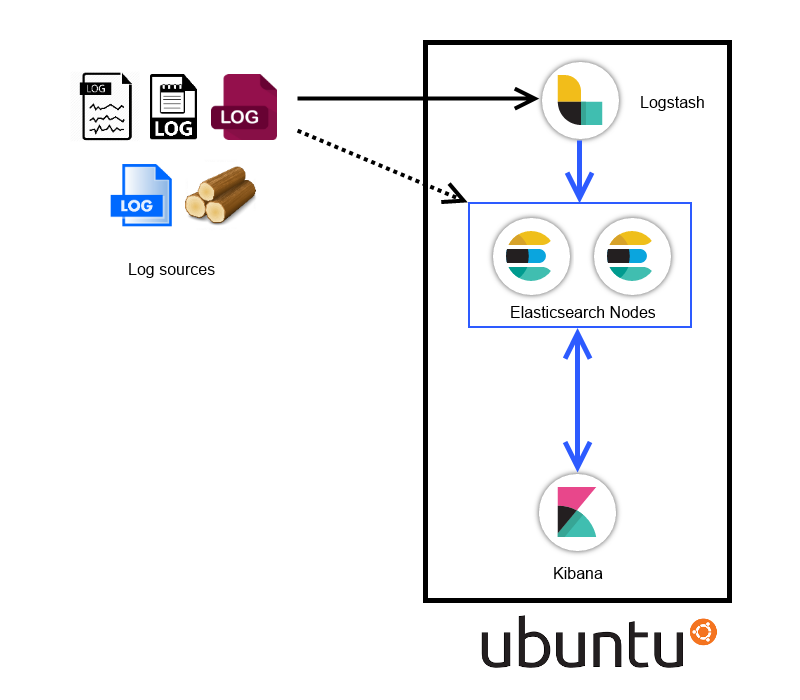
The Virtual Machine
Import the provided infra-mon-elk.ova file into Virtual Box
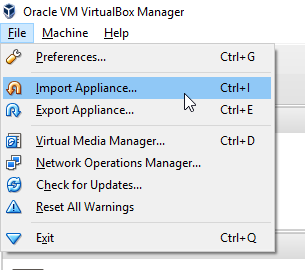
Change the location of the disk (if you want)
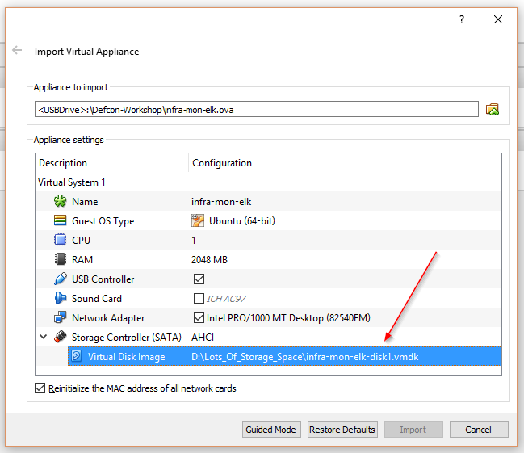
Boot the VM
user: ninja
password: ninja
Check your IP address
ifconfig
Check connectivity to the VM from your local computer
ping <IP_obtained_from_previous_step>
Add a host entry in your host machine
(use sudo/administrator)
192.168.56.101 elkhost.defcon
notepad %windir%\System32\drivers\etc\hosts
echo "192.168.56.101 elkhost.defcon" | sudo tee --append /etc/hosts
Installing Java
- Elasticsearch & Logstash requires Java to run
- The virtual machine already has JAVA installed
Installing Java
- The commands below will add the repository and install Java (in case you want to try this out)
sudo add-apt-repository -y ppa:webupd8team/java
sudo apt-get update -y
sudo apt-get -y install oracle-java8-installer
- Check the JAVA installation version by running the command below
java -version
Setting up Elasticsearch
(let’s get our hands dirty!)
**PPS:** We weren't sure of the Internet connectivity here when creating the VM
Installing Elasticsearch
(hands on)
- Install Elasticsearch by running the command below:
sudo dpkg -i /home/ninja/pkgs/elasticsearch.deb
Note: since the deb file has already been downloaded. The usual route would be to add the Elasticsearch gpg key, add the Elasticsearch repo to the sources and then the standard apt-update and apt-get install.
- Start Elasticsearch service by running:
sudo service elasticsearch start
- Check whether Elasticsearch is running or not:
curl -XGET 'http://localhost:9200'
Elasticsearch configuration
(hands on)
- Some basic configurations to start with:
sudo vi /etc/elasticsearch/elasticsearch.yml
Uncomment the following lines, make the changes as shown below and save the file:
cluster.name: elk-defcon
node.name: node-1
bootstrap.mlockall: true
network.host: 0.0.0.0
Note: Cluster name used to connect across nodes.
Node names are mostly hostnames.
To avoid swapping for elasticsearch.
Protect access.
sudo service elasticsearch restart
curl -XGET 'http://localhost:9200/_cluster/health?pretty'
curl -XGET 'http://localhost:9200/_cluster/state?pretty'
-
green - All primary and replica shards are active.-
yellow - All primary shards are active, but not all replica shards are active.-
red - Not all primary shards are active.Setting up another node
(hands on)
PS: Open another SSH session
tar -xvf /home/ninja/pkgs/elasticsearch-2.3.4.tar.gz -C /home/ninja/pkgs/
cd /home/ninja/pkgs/elasticsearch-2.3.4
vi config/elasticsearch.yml
cluster.name: elk-defcon
node.name: node-2
bootstrap.mlockall: true
network.host: 0.0.0.0
./bin/elasticsearch
Note: We use the same VM to install another node on the side
curl -XGET 'http://localhost:9200/_cluster/health?pretty'
curl -XGET 'http://localhost:9200/_cluster/state?pretty'
So What happens in a multi node cluster?
Clustering
Elasticsearch is built to be always available, and to scale. Scale can come from buying bigger servers (vertical scale, or scaling up) or from buying more servers (horizontal scale, or scaling out).
Note: We need to start by understanding the word ‘Clustering’ in context with Elasticsearch
An Empty Cluster
Our cluster with a single node, with no data and no indices:

- A node is a running instance of Elasticsearch
- A Cluster consists of one or more nodes with the same cluster.name
Note:By default Elasticsearch will have 5 primary shards and 1 replica shard with cluster name elasticsearch and node name as a random Marvel character.
Adding index
- In an empty one-node cluster, we will assign three primary shards and one replica
- There is one replica for all the primary shards

Note: Because there is no separate node, the replica shard becomes unassigned. Which is why it is not denoted in this image.
Add Failover
- Running a single node means that you have a single point of failure - there is no redundancy
- We can simply start another node to prevent data loss

Scale Horizontally
- One shard each from Node 1 and Node 2 have moved to the new Node 3

Note: This means that the hardware resources (CPU, RAM, I/O) of each node are being shared among fewer shards, allowing each shard to perform better
Scale more
Three primaries and six replicas. This means that we can scale out to a total of nine nodes, again with one shard per node

Note: This would allow us to triple search performance compared to our original three-node cluster
Failover Test
- A cluster must have a master node in order to function correctly
- When a master node dies, the nodes elect a new master

Installing Elasticsearch plugins
(hands on)
We downloaded the plugins as well: /home/ninja/plugins/
sudo /usr/share/elasticsearch/bin/plugin list
sudo /usr/share/elasticsearch/bin/plugin install file:/home/ninja/plugins/head.zip
sudo /usr/share/elasticsearch/bin/plugin install file:/home/ninja/plugins/hq.zip
sudo /usr/share/elasticsearch/bin/plugin install mobz/elasticsearch-head
Elasticsearch plugins overview
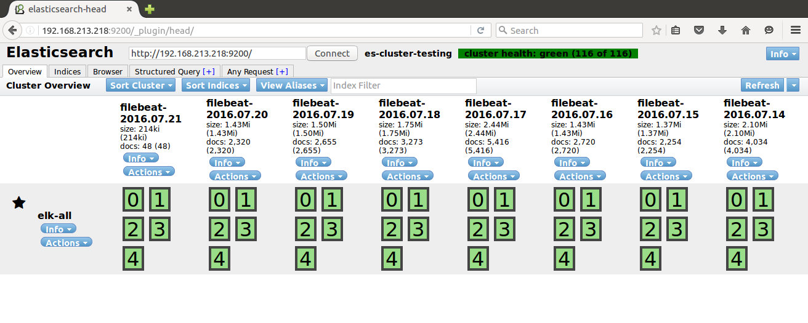
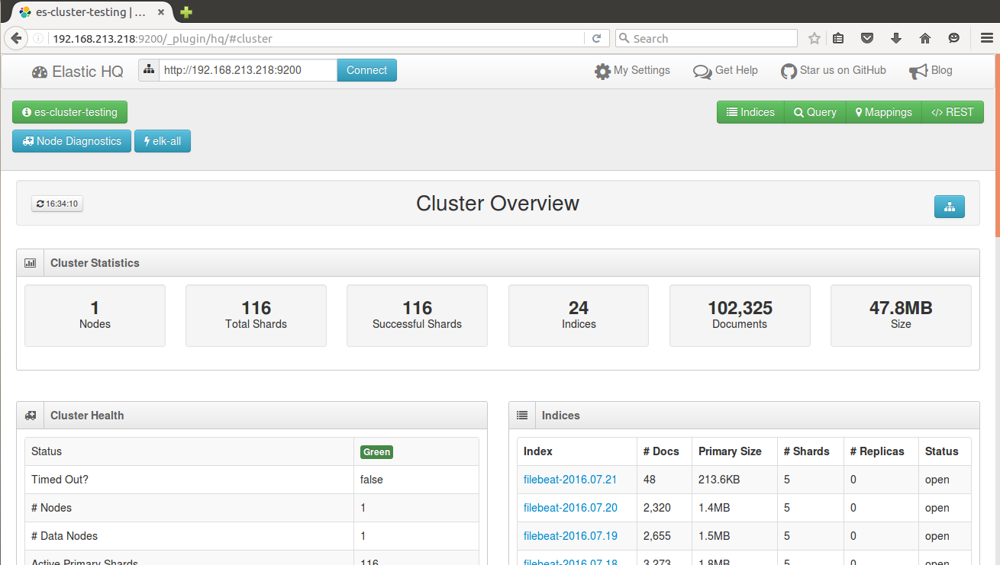
Note: We can talk this out with examples.
Restful APIs over HTTP (CURL)
curl -X<VERB> '<SCHEMA>://<HOST>/<PATH>?<QUERY_STRING>' -d '<BODY>'
Note:
VERB - The appropriate HTTP method or verb: GET, POST, PUT, HEAD, or DELETE.SCHEMA - Either http or https (if you have an https proxy in front of Elasticsearch.)HOST - The hostname of any node in your Elasticsearch cluster, or localhost for a node on your local machine.PORT - The port running the Elasticsearch HTTP service, which defaults to 9200.QUERY_STRING - Any optional query-string parameters (for example ?pretty will pretty-print the JSON response to make it easier to read.)BODY - A JSON encoded request body (if the request needs one.)What is CRUD?
C - Create
R - Retrieve
U - Update
D - Delete
CRUD operations over Elasticsearch
(hands on)
curl -XPUT 'http://localhost:9200/defcon/'
curl -XPUT 'http://localhost:9200/defcon/workshop/1' -d '{"user":"ninja"}'
curl -XGET 'http://localhost:9200/defcon/?pretty'
curl -XPOST 'http://localhost:9200/defcon/workshop/' -d '{"user":"ninja"}'
curl -XPUT 'http://localhost:9200/defcon/workshop/9' -d '{"user":"admin", "role":"tester", "job":"engineer"}'
curl -XPOST 'http://localhost:9200/defcon/workshop/9' -d '{"user":"administrator", "role":"tester", "job":"engineer"}'
curl -XPOST 'http://localhost:9200/defcon/workshop/' -d '{"user":"abcd", "role":"tester", "job":"engineer"}'
curl -XPOST 'http://localhost:9200/defcon/workshop/' -d '{"user":"abcd", "role":"admin", "job":"engineer"}'
curl -XGET 'http://localhost:9200/defcon/_search?q=user:abcd&pretty'
curl -XDELETE 'http://localhost:9200/defcon/workshop/1'
Setting up Logstash

Logstash components
Logstash consists of 3 main components
- Input: Passing logs to process them into machine understandable format
- Filters: Set of conditionals to perform specific action on a event
- Output: Decision maker for processed events/logs
Basic Logstash configuration
input {
stdin {}
file {}
...
}
filter {
grok {}
date {}
geoip {}
...
}
output {
elasticsearch {}
email {}
...
}
Input
An input plugin enables a specific source of events to be read by Logstash.
- File
- Lumberjack
- S3
- Beats
- Stdin
- Many more.
https://www.elastic.co/guide/en/logstash/current/input-plugins.html
Filter
A filter plugin performs intermediary processing on an event. Filters are often applied conditionally depending on the characteristics of the event.
- CSV
- GeoIP
- Mutate
- Grok
- Many More.
https://www.elastic.co/guide/en/logstash/current/filter-plugins.html
Output
An output plugin sends event data to a particular destination. Outputs are the final stage in the event pipeline.
- Elasticsearch
- Stdout
- S3, file
- HTTP
- Many More.
https://www.elastic.co/guide/en/logstash/current/output-plugins.html
Installing logstash
(hands on)
To install logstash package run the command below
sudo dpkg -i /home/ninja/pkgs/logstash.deb
Basic logstash pipeline
sudo /opt/logstash/bin/logstash -e 'input { stdin {} } output { stdout {} }'
A quick primer on Grok filters
- The syntax for a grok pattern is
%{SYNTAX:SEMANTIC} SYNTAXis the name of the pattern that will match your text.- For example:
1337will be matched by theNUMBERpattern,192.168.123.12will be matched by theIPpattern.
- For example:
- SEMANTIC is the identifier you give to the piece of text being matched.
E.g.1337could be the count and192.168.123.12could be aclientmaking a request
%{NUMBER:count}
%{IP:client}
Note: Grok is based on pre created regex patterns
Example grok
55.3.244.1 GET /index.html 15824 0.043
%{IP:client} %{WORD:method} %{URIPATHPARAM:request} %{NUMBER:bytes} %{NUMBER:duration}
Consider the following Apache Log Event
Using a regular expression!!
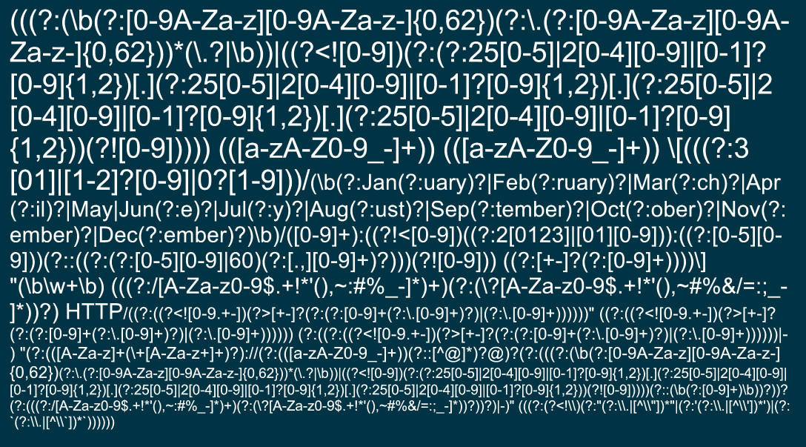
Using Grok filter patterns :)
%{IPV4} %{USER:ident} %{USER:auth} \[%{HTTPDATE:timestamp}\] "(?:%{WORD:verb} %{NOTSPACE:request}(?: HTTP/%{NUMBER:httpversion})?)" %{NUMBER:response} (?:%{NUMBER:bytes}|-)
Things can get even more simpler using an inbuilt grok :) :)
%{COMBINEDAPACHELOG}
Available Logstash Grok Patterns
- https://grokdebug.herokuapp.com/patterns
- http://grokconstructor.appspot.com/
- https://github.com/logstash-plugins/logstash-patterns-core/blob/master/patterns/grok-patterns
- https://github.com/clay584/logstash_configs
Apache log sample with elasticsearch
(hands on)
Let’s parse some Apache logs in elasticsearch using logstash
Create a logstash config file using the following command:
sudo vi /etc/logstash/conf.d/apache.conf
input {
file {
path => "/home/ninja/log-samples/access.log"
start_position => beginning
ignore_older => 0
}
}
filter {
grok {
match => { "message" => "%{COMBINEDAPACHELOG}"}
}
geoip {
source => "clientip"
}
}
output {
elasticsearch {
hosts => ["localhost:9200"]
index => "apache-logs"
}
#stdout {}
}
Then provide the config to logstash to start the pipeline
sudo /opt/logstash/bin/logstash -f /etc/logstash/conf.d/apache.conf
Then check the elasticsearch head plugin
http://elkhost.defcon:9200/_plugin/head
Setting up Kibana
Kibana is an open source analytics and visualization platform designed to work with Elasticsearch. You use Kibana to search, view, and interact with data stored in Elasticsearch indices
Installing Kibana
(hands on)
sudo dpkg -i /home/ninja/pkgs/kibana.deb
Basic Kibana configuration
Just for reference, Here is the kibana config file:
sudo vi /opt/kibana/config/kibana.yml
Note: Kibana works out of the box support with Elasticsearch
server.host: "0.0.0.0"
sudo service kibana start
Kibana Dashboard
http://elkhost.defcon:5601/
Understanding the Kibana UI
Index Selection
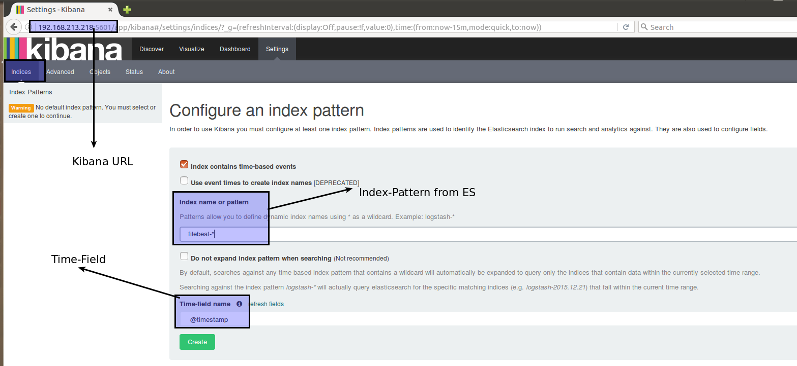
Adding multiple indices

Discovery
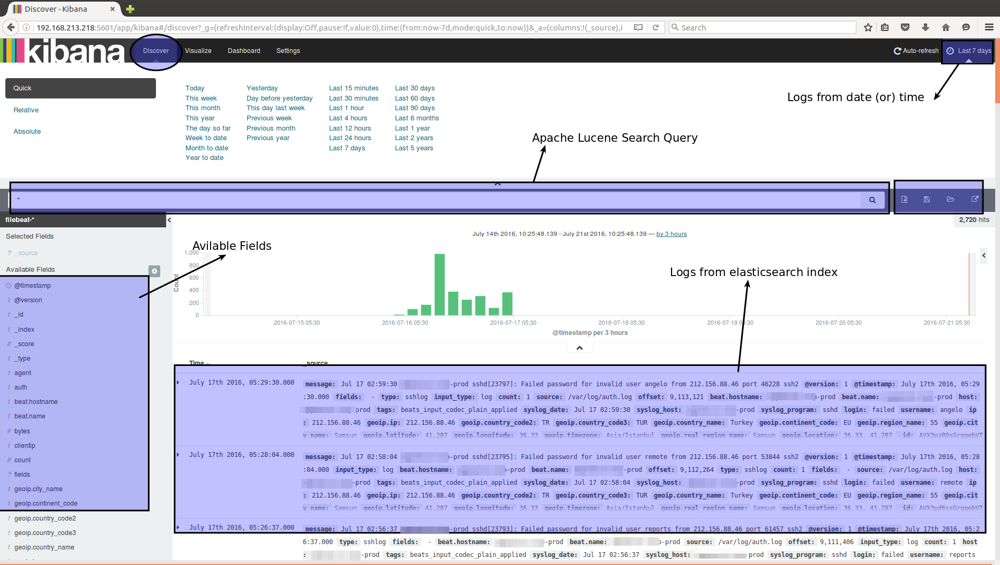
Mapped log in JSON format
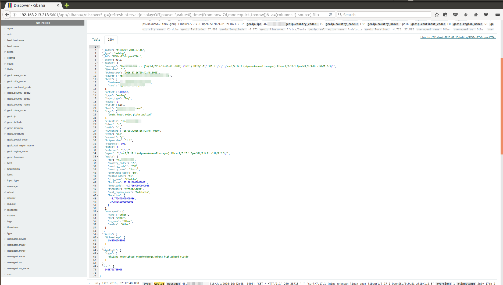
Visualize
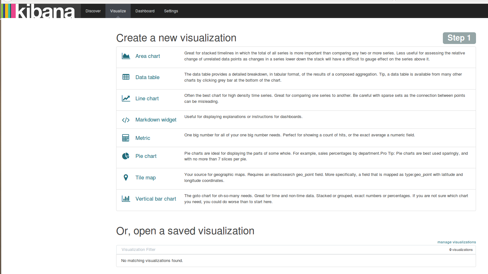
Selecting the search source

Creating a pie chart
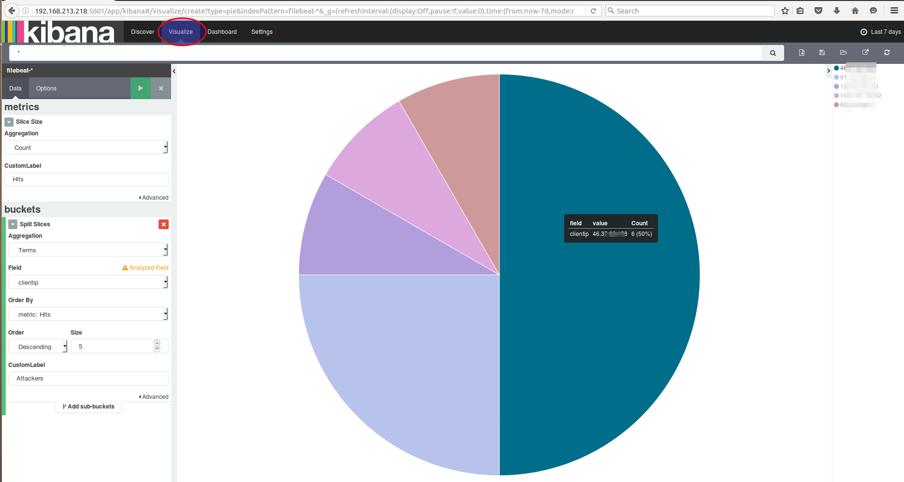
Discover
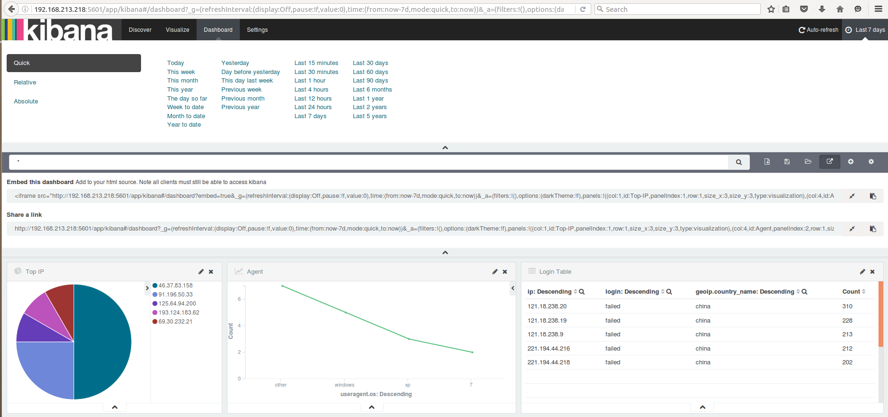
Status
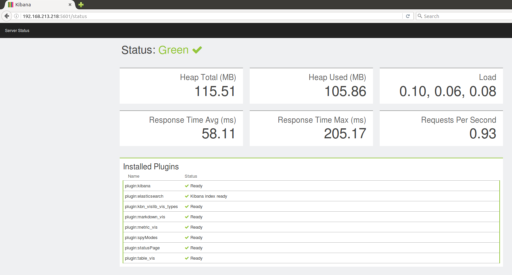
Import/Export
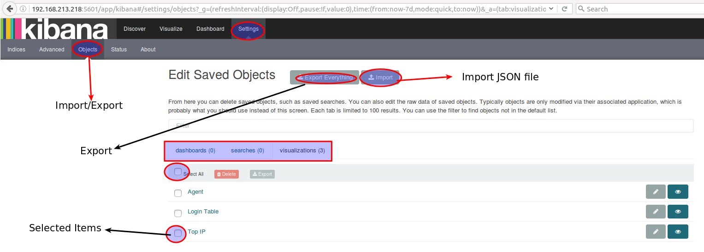
Throughout our exercises, did you notice anything missing?
Securing Elasticsearch & Kibana
- By default elasticsearch and kibana doesn’t have security
- We are setting up basic authentication using
htpasswdandnginxreverse proxy - The commercial product called
shieldis available from company. Search Guardis an alternative open source project forshield.
Basic Authentication setup for Elasticsearch & Kibana
(hands on)
Installing nginx and apache2-utils.
(It’s already installed in the virtual machine)
sudo apt-get install nginx apache2-utils -y
To create basic authentication user and password.
sudo htpasswd -c /etc/nginx/htpasswd.users elkadmin
Password : D3fc0nN!nj@
Confirm Password : D3fc0nN!nj@
Note:elkadmin is the username and password is D3fc0nN!nj@
sudo vi /etc/nginx/sites-available/default
server {
listen 80; #for Kibana
server_name localhost;
auth_basic "Restricted Access";
auth_basic_user_file /etc/nginx/htpasswd.users;
location / {
proxy_pass http://localhost:5601;
proxy_http_version 1.1;
proxy_set_header Upgrade $http_upgrade;
proxy_set_header Connection 'upgrade';
proxy_set_header Host $host;
proxy_cache_bypass $http_upgrade;
}
}
server {
listen 8080; #for Elasticsearch
server_name localhost;
auth_basic "Restricted Access";
auth_basic_user_file /etc/nginx/htpasswd.users;
location / {
proxy_pass http://localhost:9200;
proxy_http_version 1.1;
proxy_set_header Upgrade $http_upgrade;
proxy_set_header Connection 'upgrade';
proxy_set_header Host $host;
proxy_cache_bypass $http_upgrade;
}
}
sudo service nginx restart
sudo vi /etc/elasticsearch/elasticsearch.yml
network.host: localhost
sudo service elasticsearch restart
sudo vi /opt/kibana/config/kibana.yml
server.host: "localhost"
sudo service kibana restart
http://elkhost.defcon:80
http://elkhost.defcon:8080